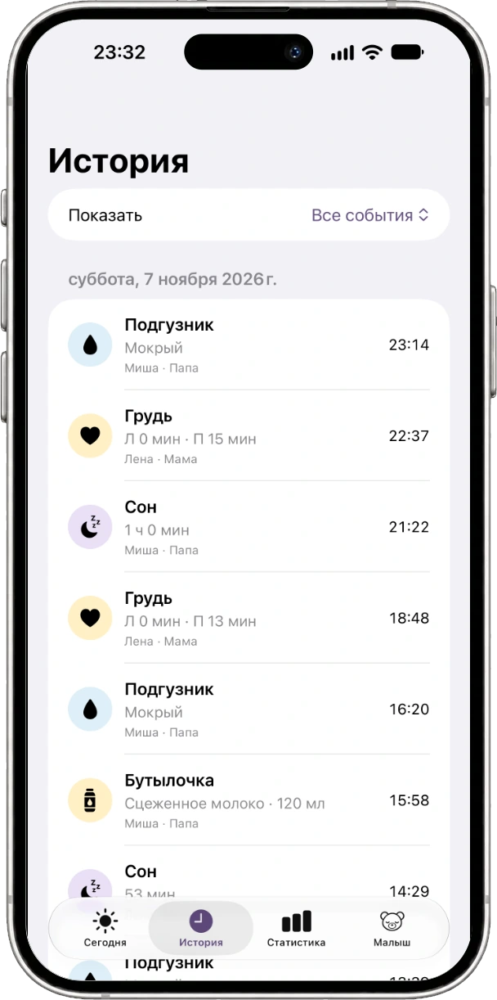
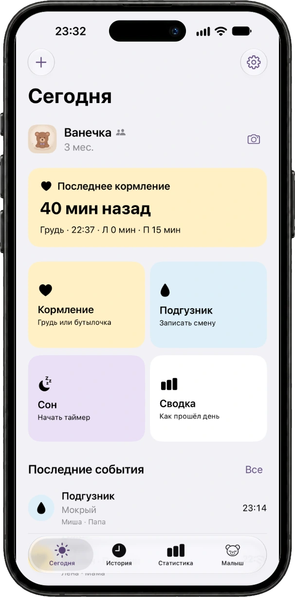
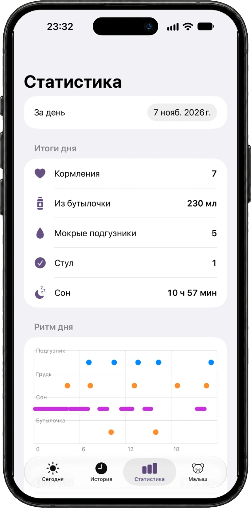
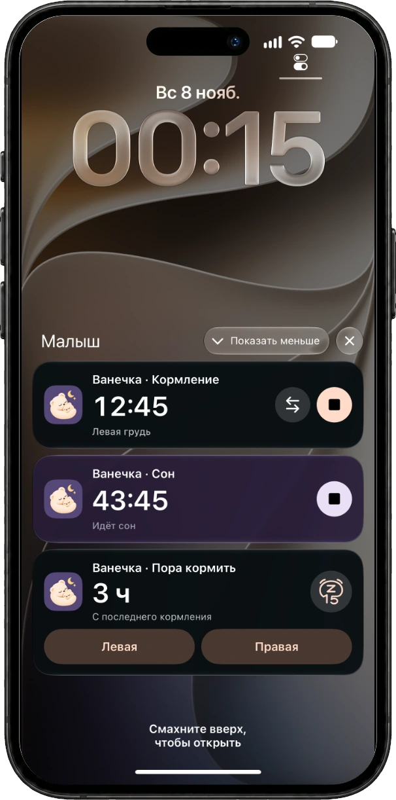
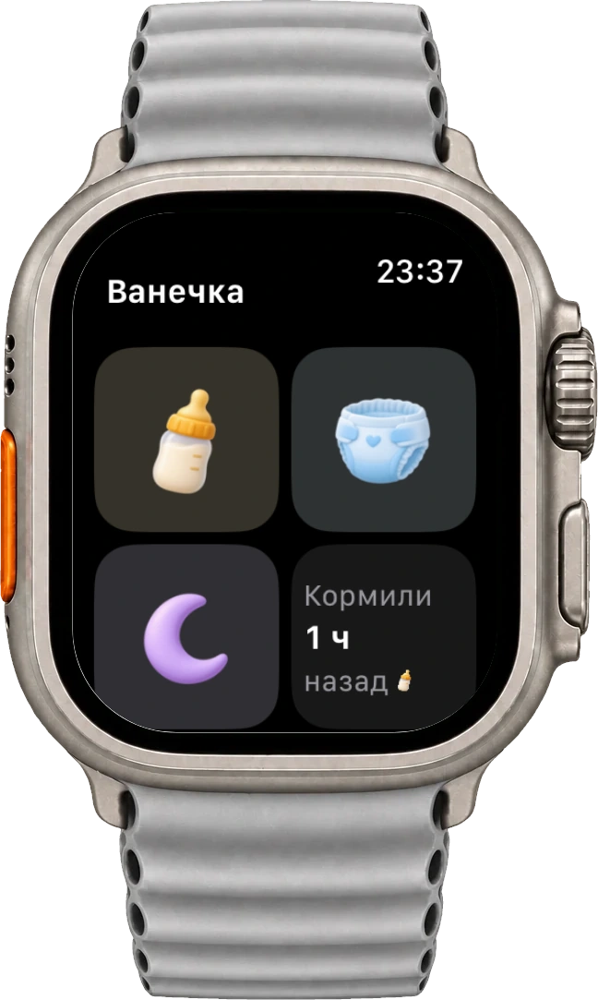
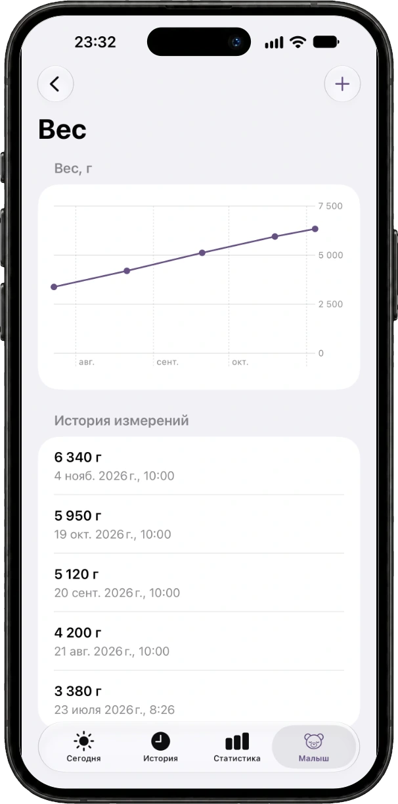
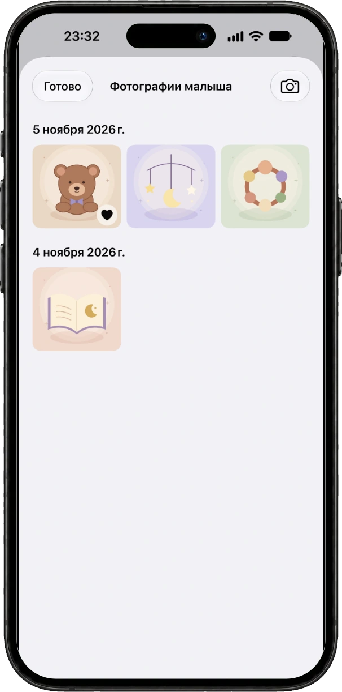
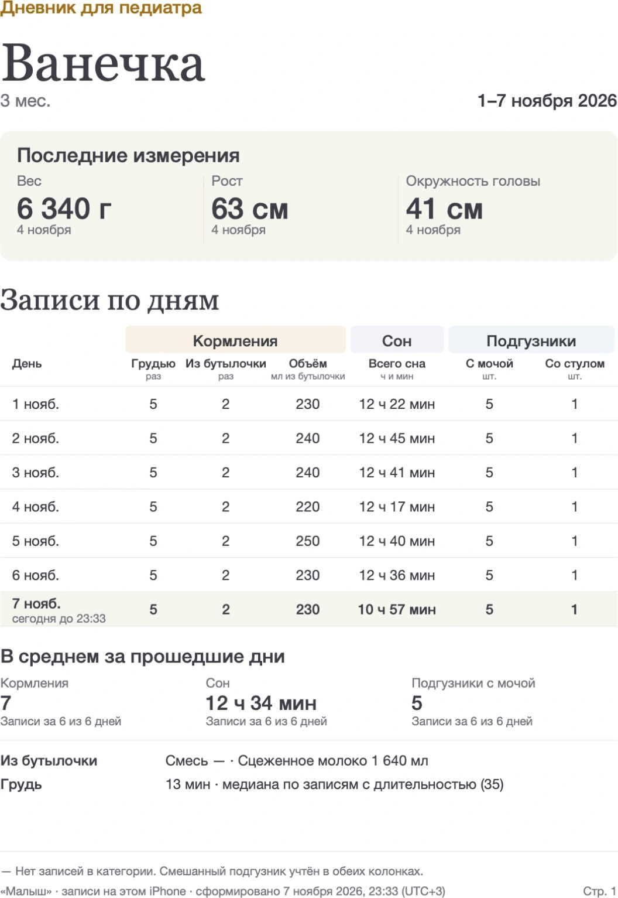

Малыш
Малыш
Один дневник
для двух
родителей
Все кормления, сны и маленькие события первого года. Записывайте каждый со своего iPhone — и будьте в курсе вместе.
Познакомиться с «Малышом»Готовится к выходу в App Store


Вы оба знаете,
как прошёл день.
С iCloud записи появляются у обоих родителей. Можно сменить друг друга и посмотреть, когда малыш ел или проснулся.
Пригласите близкого в общий дневник или ведите личный на своём iPhone.
Как пригласить второго родителяМаленькие события.
Целый день.
Кормления, сон и подгузники — всё рядом, когда одна рука занята малышом.
- Кормления
- Таймер груди с переключением сторон. Для бутылочки — содержимое и объём.
- Сон
- Начните таймер, когда малыш уснул. Завершите, когда проснулся.
- Подгузники
- Отмечайте смены и возвращайтесь к ним в истории.


Вечером всё складывается в историю.
Откройте нужный день, посмотрите записи и сводку кормлений, сна и смен подгузников.
Телефон можно
отложить.
Важное — на виду.
Таймеры и напоминания на экране блокировки и в Dynamic Island совместимого iPhone.
- Кормление
- Следите за временем, переключайте сторону и завершайте таймер.
- Сон
- Посмотрите, сколько малыш спит, и закончите запись, когда он проснётся.
- Напоминание
- Выберите интервал после кормления. Начните следующее или отложите напоминание на 15 минут.

Малыш на руках.
Дневник на запястье.
Начните кормление, запишите сон или смену подгузника с Apple Watch.
После первой синхронизации часы сохраняют записи и без связи с телефоном. Они передадут их в дневник, когда снова подключатся к iPhone.
Как подключить часы
Растёт каждый день.
Столько всего
хочется сохранить.
Записывайте вес, рост и окружность головы. Смотрите изменения на графиках и добавляйте фотографии в альбом малыша.


На приём
с готовым отчётом.
Измерения и сводка кормлений, сна и подгузников за выбранный период — в одном PDF.
Откройте «Отчёт для педиатра» в профиле ребёнка. Сохраните файл или поделитесь им через системное меню iPhone.
Как подготовить отчёт
Освоиться вместе.
Поможем с iCloud, приглашениями, часами и напоминаниями.